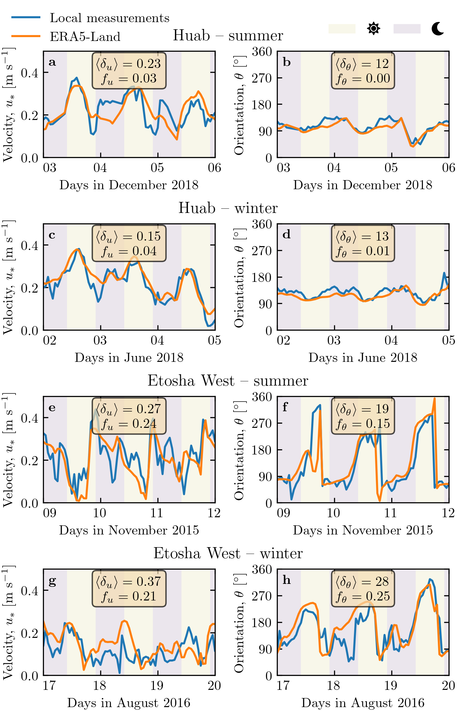

Note
Click here to download the full example code
Figure 3#
import os
import sys
import locale
import calendar
import numpy as np
import matplotlib.pyplot as plt
import matplotlib.dates as mdates
import matplotlib.transforms as mtransforms
from datetime import datetime, timedelta
sys.path.append('../')
import python_codes.theme as theme
from python_codes.general import smallestSignedAngleBetween, find_mode_distribution
locale.setlocale(locale.LC_ALL, 'en_US.utf8')
def tick_formatter(ax, fmt='%d'):
myFmt = mdates.DateFormatter(fmt)
ax.xaxis.set_major_formatter(myFmt)
ticklabels = ax.get_xticklabels()
ticklabels[0].set_ha('left')
# Loading figure theme
theme.load_style()
# paths
path_imgs = '../static/images/'
path_savefig = '../Paper/Figures'
path_outputdata = '../static/data/processed_data'
# Loading wind data
Data = np.load(os.path.join(path_outputdata, 'Data_final.npy'), allow_pickle=True).item()
Stations = sorted(Data.keys())
# Figure properties
variables = ['U_star', 'Orientation']
label_var = {'U_star': r'Velocity, $u_{*}~[\textup{m}~\textup{s}^{-1}]$', 'Orientation': r'Orientation, $\theta~[^\circ]$'}
labels = [r'\textbf{a}', r'\textbf{b}', r'\textbf{c}', r'\textbf{d}',
r'\textbf{e}', r'\textbf{f}', r'\textbf{g}', r'\textbf{h}']
row_labels = ['Huab -- summer', 'Huab -- winter',
'Etosha West -- summer', 'Etosha West -- winter']
years = [2018, 2018, 2015, 2016]
months = [12, 6, 11, 8]
days = [(3, 6), (2, 5), (9, 12), (17, 20)]
month_calendar = {index: month for index, month in enumerate(calendar.month_name) if month}
bbox_props = dict(boxstyle='round', facecolor='wheat', alpha=0.7)
stations_plot = ['Huab_Station', 'Huab_Station', 'Adamax_Station', 'Adamax_Station']
# #### Figure
fig = plt.figure(figsize=(theme.fig_width, 0.95*theme.fig_height_max),
constrained_layout=True)
subfigs = fig.subfigures(nrows=5, ncols=1,
height_ratios=[0.125, 1, 1, 1, 1])
subfigs[0].set_visible(False)
ax_list = []
for i, (subfig, yr, mth, dy, station) in enumerate(zip(subfigs[1:], years, months,
days, stations_plot)):
axarr = subfig.subplots(1, 2)
ax_list.append(axarr[0])
ax_list.append(axarr[1])
#
subfig.suptitle(row_labels[i])
subfig.set_facecolor('none')
tmin = datetime(yr, mth, dy[0])
tmax = datetime(yr, mth, dy[1])
#
mask = (Data[station]['time'] >= tmin) & (Data[station]['time'] < tmax)
delta_u = np.abs((Data[station]['U_star_era'][mask] - Data[station]['U_star_insitu'][mask])/Data[station]['U_star_era'][mask])
Delta = smallestSignedAngleBetween(Data[station]['Orientation_era'][mask], Data[station]['Orientation_insitu'][mask])
mode_delta = np.array([find_mode_distribution(Delta, i) for i in np.arange(150, 350)]).mean()
delta_angle = np.abs(Delta)
#
mask_u_theta = (np.abs(delta_u) < 1) & (delta_angle < 80)
mask_u = np.abs(delta_u) > 0.6
mask_theta = delta_angle > 50
#
for j, (ax, var, label) in enumerate(zip(axarr, variables, labels[i])):
l1, = ax.plot(Data[station]['time'], Data[station][var + '_insitu'],
label='Local measurements', color=theme.color_insitu)
l2, = ax.plot(Data[station]['time'], Data[station][var + '_era'],
label='ERA5-Land', color=theme.color_Era5Land)
ax.set_xlim(tmin, tmax)
tick_formatter(ax)
#
# #### plot nights
tstart = tmin - timedelta(days=1)
tstart = tstart.replace(hour=10)
x_night = [tstart + timedelta(days=i) for i in range((tmax-tmin).days + 2)]
for daylight in x_night:
a1 = ax.axvspan(daylight, daylight + timedelta(hours=12),
facecolor=theme.color_day, alpha=0.1, edgecolor=None,
label=theme.Icon_day)
a2 = ax.axvspan(daylight - timedelta(hours=12), daylight,
facecolor=theme.color_night, alpha=0.1, edgecolor=None,
label=theme.Icon_night)
#
ax.set_ylabel(label_var[var])
ax.set_xlabel('Days in {} {:d}'.format(month_calendar[tmin.month], tmin.year))
ax.set_xticks([tmin + timedelta(days=i) for i in range((tmax-tmin).days + 1)])
#
# ax2 = ax.twinx() # instantiate a second axes that shares the same x-axis
if var == 'U_star':
ax.set_ylim((0, 0.5))
ax.text(0.5, 0.94,
r"""$\langle \delta_{{u}} \rangle = {:.2f}$
$f_{{u}} = {:.2f}$""".format(
delta_u[mask_u_theta].mean(),
mask_u.sum()/delta_angle.size),
ha='center', va='top', transform=ax.transAxes, bbox=bbox_props)
else:
ax.set_ylim((0, 360))
ax.set_yticks((0, 90, 180, 270, 360))
#
ax.text(0.5, 0.94,
r"""$\langle \delta_{{\theta}} \rangle = {:.0f}$
$f_{{\theta}} = {:.2f}$""".format(
delta_angle[mask_u_theta].mean(),
mask_theta.sum()/delta_angle.size),
ha='center', va='top', transform=ax.transAxes, bbox=bbox_props)
#
# a1.set_edgecolor((0, 0, 0, 1))
first_legend = fig.legend(handles=[a1, a2], loc='upper right',
ncol=2, columnspacing=1, bbox_to_anchor=(1, 0.985),
frameon=False)
second_legend = fig.legend(handles=[l1, l2], loc='upper left',
ncol=1, columnspacing=1, bbox_to_anchor=(0, 0.999),
frameon=False)
#
trans = mtransforms.ScaledTranslation(4/72, -4/72, fig.dpi_scale_trans)
for label, ax in zip(labels, ax_list):
ax.text(0.0, 1.0, label, transform=ax.transAxes + trans, va='top')
fig.align_labels()
plt.savefig(os.path.join(path_savefig, 'Figure3.pdf'),)
plt.show()
Total running time of the script: ( 0 minutes 2.302 seconds)